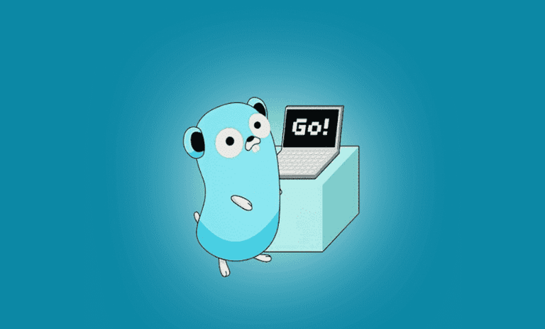
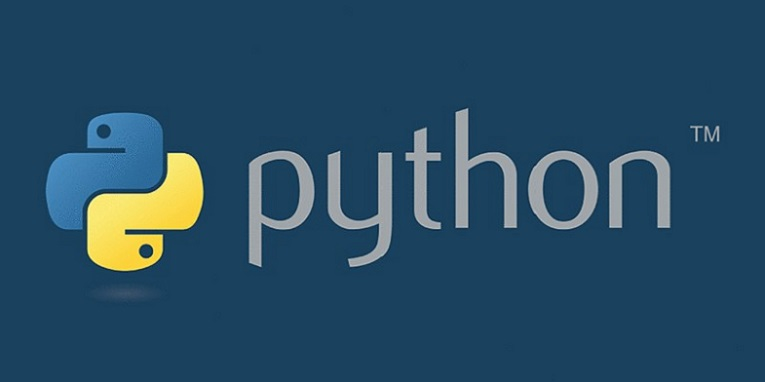

درباره من

اینجانب امیر بشیری کارشناسی رو در رشته علوم کامپیوتر دانشگاه کردستان تحصیل کردم ، در سال های 2019 تا 2023 و در حال حاضر دانشجوی کارشناسی ارشد نرم افزار در دانشگاه کردستان هستم . همچنین علاقه زیادی به حوزه ترید در بازار فارکس دارم.
ایمیل شماره تماس : 09385703152لینک های مفید
معرفی زبان برنامه نویسی گو (GO)
تاریخ : 30 آبان 1402
اگر در برنامه نویسی پیش زمینه داشته باشید، میدانید که زبان برنامه نویسی گو با C ظاهری کاملاً مشابه دارند. هر دو این زبانهای برنامه نویسی برای برنامهنویسان حرفهای مناسب است. این زبان، حداقل ابزارها را دارد ولی کارایی زیادی را برای شما فراهم میکند. این زبان در باطن، بسیار فراتر از زبان برنامه نویسی C عمل میکند.
معرفی زبان برنامه نویسی پایتون
تاریخ : 30 آبان 1402
«زبان برنامه نویسی پایتون» (Python Programming Language)، زبانی با یادگیری آسان محسوب میشود و از همین رو بسیاری از برنامهنویسهای تازهکار آن را به عنوان اولین زبان برنامهنویسی خود برمیگزینند، زیرا پایتون به عنوان یک «زبان همهمنظوره» (General-Purpose Language) ساخته و توسعه داده شده و محدود به توسعه نوع خاصی از نرمافزارها نیست. به بیان دیگر، میتوان از آن برای هر کاری، از «تحلیل داده» (Data Analysis) گرفته تا ساخت بازیهای کامپیوتری استفاده کرد. بنابراین، یادگیری پایتون بسیار حائز اهمیت است.